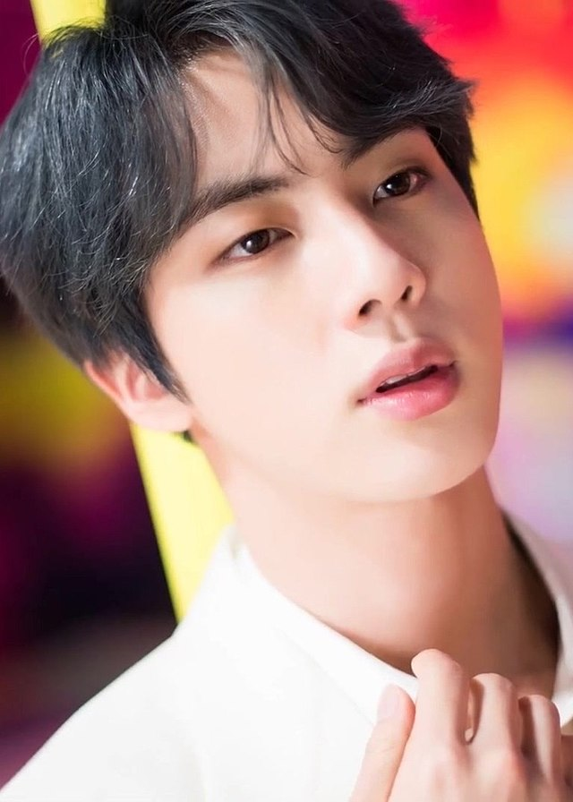

Janella Salvador
A Filipino TV actress and singer. She has been a talent of ABS-CBN since 2012, with the phenomenal TV series
She was my idol when I was in grade 10 because of her songs and she is also beautiful and she acts well. So every movie or teleserye I follow it.

Jak Roberto
Currently working as an exclusive artist of GMA Network, and is known for his role as Andres "Andoy" dela Cruz in the 2017
television series Meant to Be.
Roberto is brother to fellow GMA artist Sanya Lopez.
He was my idol in the Meant to be teleserye series in 2017.

Kim Seok-jin
Jin, is a South Korean singer, songwriter, and member of the South Korean boy band BTS.
Back to the mainpage